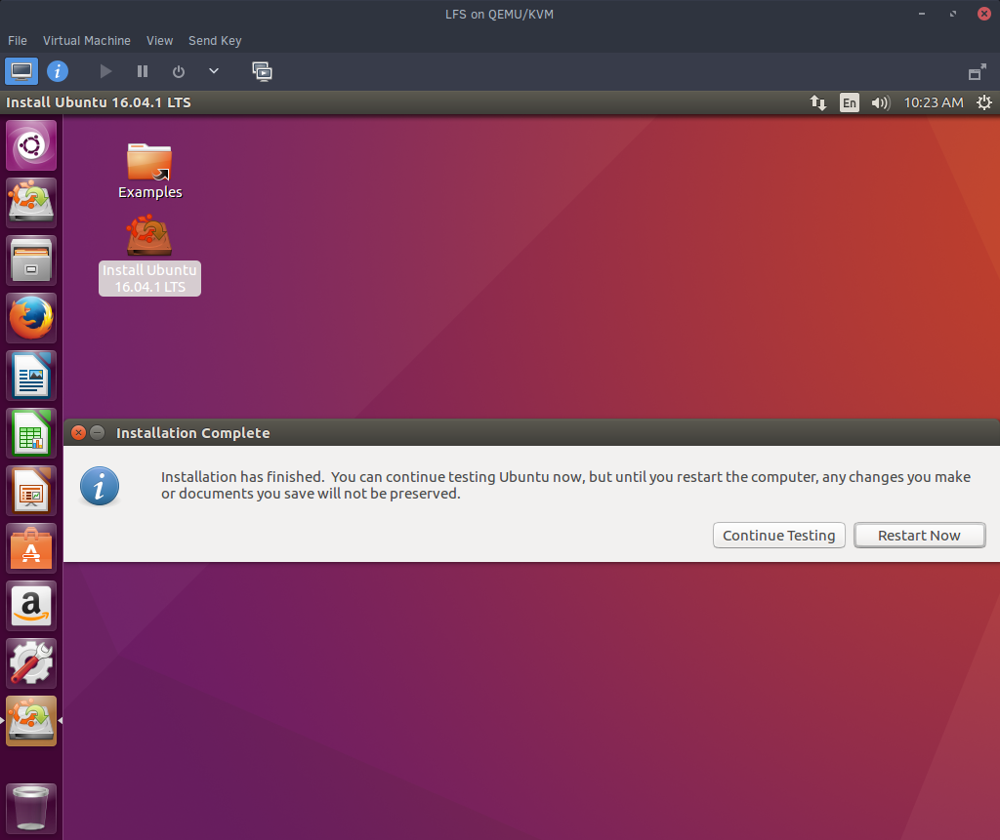
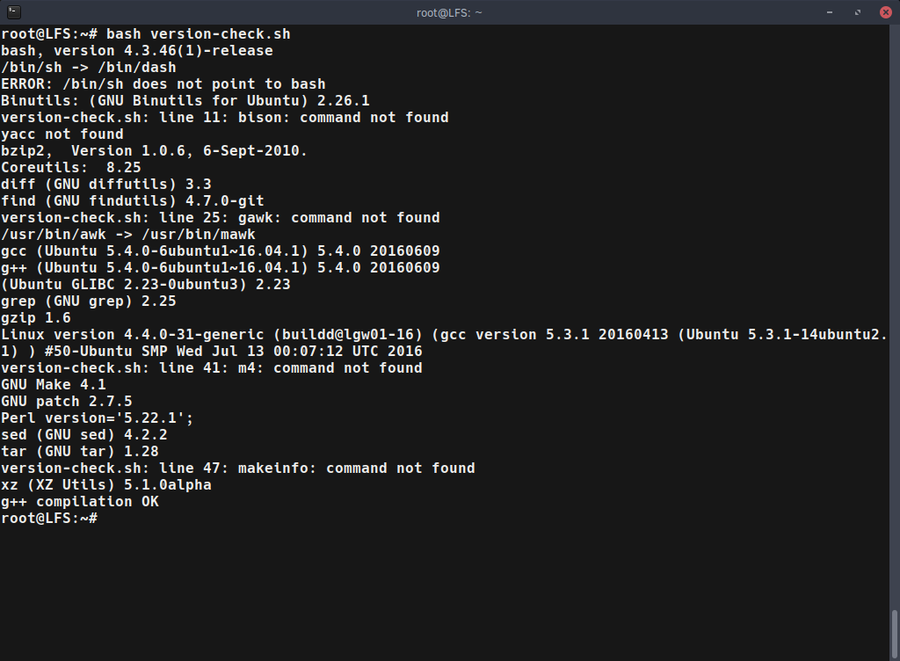
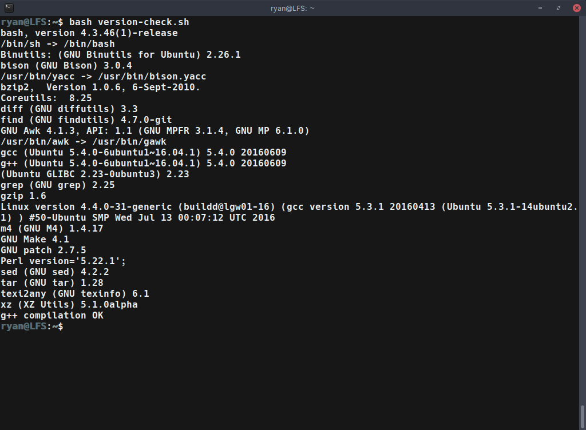
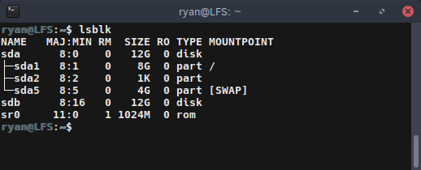
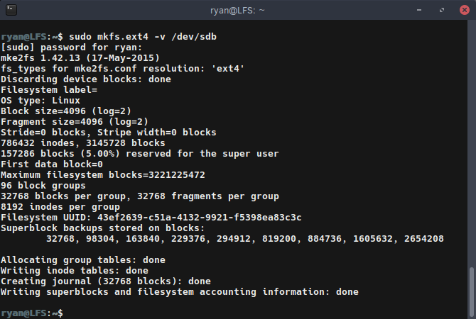

When I started using Arch Linux a while back, I learn about some of the internals of Linux quickly. Ever since then, I have considered building a Linux From Scratch by following the guidelines outlined in the book. Based on my experience with Arch Linux, I’m sure that compiling a system from scratch will continue to teach me about Linux at a much deeper level.
Getting Started

First, it should be known that this process follows a book that is freely available at www.linuxfromscratch.org. The book is updated from time to time, and there are several versions of it (ex: systemd or not). I am attempting to complete the systemd adaptation. There are also many videos online of people walking through the steps. I find watching such videos can be very helpful to watch.
Setting Up the Host System

LFS is constructed from a host environment that has the software required to build and compile all the components of the system. This host system can be a current Linux install, a seperate computer that is dedicated to LFS, or a Linux virtual machine. The LFS system is then assembled in a another partition, or even on a separate hard drive.
I setup a KVM virtual machine using Virt Manager for my host system, and then attached a virtual hard drive to build LFS on. I decided to use a Ubuntu 16.04 Desktop install because it should have most of the build tools, and it is easy to install any missing ones. For now, I configured the VM to use 4 cores and 4GB of RAM, but I might decide to increase that when I start compiling packages. I also decided to not worry about any of the fancy partitioning options like setting up LVM or disk encryption, and just let the installer automatically do it for me. Those features are not really needed here and I figured it would just potentially confuse me.
After the VM finished installing, I shutdown the system and added a virtual drive. This will be the virtual drive that I build the entire LFS system in. Then I started up the VM again, confirmed that everything installed correctly, and installed openssh so that I could just ssh into the system from my desktop if I didn’t feel like working inside the VM’s GUI.
Setting up the Host Environment
Checking Required Packages

Now that the host system was setup, the host environment had to be configured. Luckily, LFS provides a nice script that can be copy and pasted into a terminal. This script prints out what required packages and programs are not yet installed on the system (make sure to run it as either root, or using sudo). When I ran the script, there were a few missing packages that had to be installed:
- bison
- gawk
- texinfo (makeinfo)
So, I just ran a simple apt-get install bison gawk texinfo command and was good to go. I also had a symlink issue because /bin/sh was pointing to /bin/dash, and LFS wants it to point to /bin/bash/. This was easily resolved using the command ln -sf bash /bin/sh.

After installing those few packages and fixing the symlink, the check script was happy, and I could move on.
Checking Libraries

After verifying that my host system had all the required packages, I had to confirm that a few libraries were “consistent”. Again, LFS provides a simple script for this. When I ran it, the three libraries were not found. Tthe books states that all the files should either be absent or present. If one or two are there and the others missing, that is a problem. So my system was okay.
Formatting the LFS Disk
I added my LFS disk through the Virt Manager settings, which doesn’t format it, so that had to be done next.

I first used lsblk to confirm the disk name. In my case it was the /dev/sdb disk.

After getting the disk’s path, it was time to format. I decided to format the disk with t the basic, but very solid ext4 file system using the following command (again, as root or using sudo):
mkfs.ext4 -v /dev/sdb
Note that the -v was not required, but I personally prefer to see the output. Also, if I wanted to specify the drive using the UUID, that could be accomlished using the -U flag to specify a UUID instead of the file path.
The next few preparatory steps before starting to build LFS must be done each time the host system boots, so I think I am going to break that into a separate post. That way, it can be more easily referenced. Enjoy!